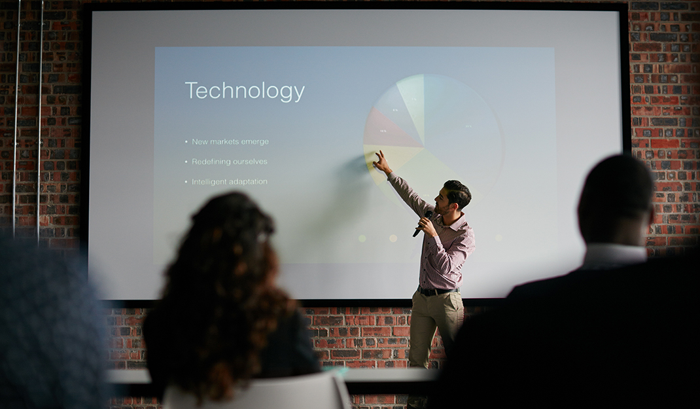
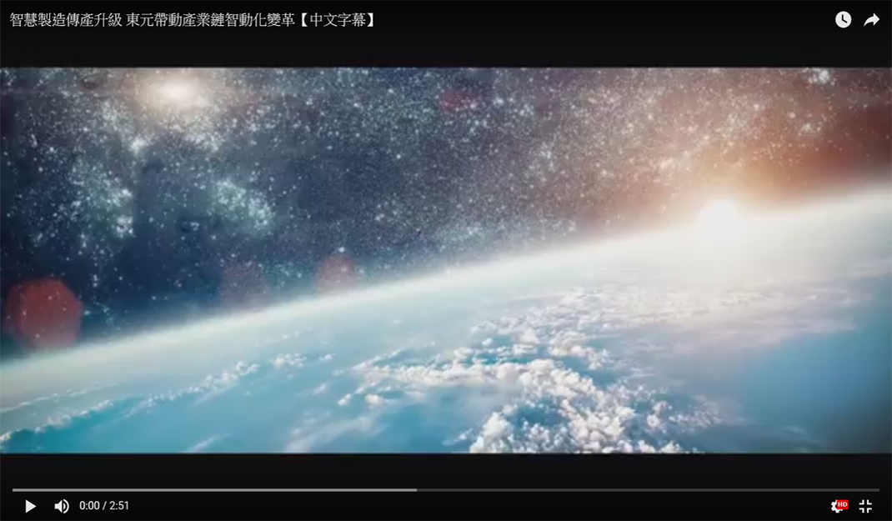

2017.09.15
東元驅動更智能化的未來 提供智慧工廠解決方案
東元電機致力於高效節能的機電產品研發及生產
-

-

-
-
素有資通訊界奧林匹克大會之稱的「世界資訊科技大會」，台灣在睽違17年後再次獲得主辦權，於9月10-13日在臺北世貿舉行。全球工業馬達前三大廠東元電機，此次積極參與，不但成為贊助廠商之一，並且召集旗下關係企業東訊公司、安華機電工程、東捷資訊等，以智慧工廠為主題，共同展出整合方案，利用物聯網、大數據，透過軟硬體整合、虛實結合，將智能馬達、智慧產線，到廠區節能節電、和針對機電設備的智慧型健康管理等集團內智能產品加以整合，東元集團要為工廠生產線提供邁向智能化的最佳解決方案。
世界資訊科技大會
東元集團近年來投入IoT、M2M的相關技術發展，SAS跟PAS雲端運算技術研發、以及服務平台的開發運用，已獲得相當成果，今年六月於中壢廠啟用「馬達固定子自動化生產中心」，即為東元集團內首座「馬達彈性生產智動化產線」，使機台數量減少30%，成本降10%，整體效率提昇3倍以上。這次東元電機參加「世界資訊科技大會」，除將參與智慧製造論壇，與國際大廠分享本身經驗之外，也將在展區(D718)展示東元集團獨特的智能馬達系統、機電設備健康管理系統、工廠能源管理系統，及MES、ERP相關智慧製造的運用整合，提供智慧工廠的解決方案。
東元智能化之實力
而關係企業安華機電所展示之中壢廠區智慧型能源管理系統，是東元集團整合集團研發力量，結合先進物聯網與電力監控技術，積極研製低碳、節電及安全之電能管理服務系統，以提高工廠用電效率，引領工業邁向智動化生產力時代。本系統預估每年可節省電費約1500萬及減少碳排約220萬噸。
東元機械手臂TEtherCAT電控解決方案，透過機械手臂展現智能化生產，其重複精度高，可達 ±0.02mm，生產並可彈性化，即依照產線需求，編輯其動作，並搭配視覺等系統，展現東元智能化之實力。
現場活動
全球景氣回升，製造業智慧自動化需求增加，東元也朝向大量客製化的生產方向，並且致力於節能、減排、智能、自動，透過電子式保護電驛、馬達與變頻器的系統整合銷售，減速機搭配高效率馬達的解決方案，智慧馬達&智慧變頻器的共同推動，期盼提供客戶Safe/ Saving /Smart的最高3S效益。
9月6號到9號展期間，東元電機將每天準備五場問答時間，歡迎來訪攤位號L118一起長知識拿小禮。
現場活動
全球景氣回升，製造業智慧自動化需求增加，東元也朝向大量客製化的生產方向，並且致力於節能、減排、智能、自動，透過電子式保護電驛、馬達與變頻器的系統整合銷售，減速機搭配高效率馬達的解決方案，智慧馬達&智慧變頻器的共同推動，期盼提供客戶Safe/ Saving /Smart的最高3S效益。
9月6號到9號展期間，東元電機將每天準備五場問答時間，歡迎來訪攤位號L118一起長知識拿小禮。
東元智能化之實力
而關係企業安華機電所展示之中壢廠區智慧型能源管理系統，是東元集團整合集團研發力量，結合先進物聯網與電力監控技術，積極研製低碳、節電及安全之電能管理服務系統，以提高工廠用電效率，引領工業邁向智動化生產力時代。本系統預估每年可節省電費約1500萬及減少碳排約220萬噸。